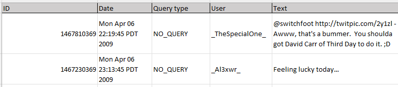
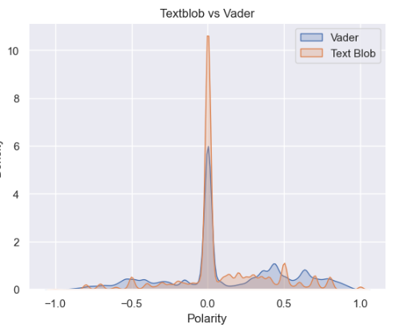
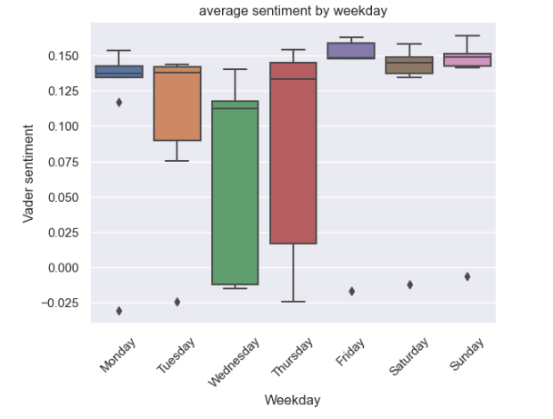
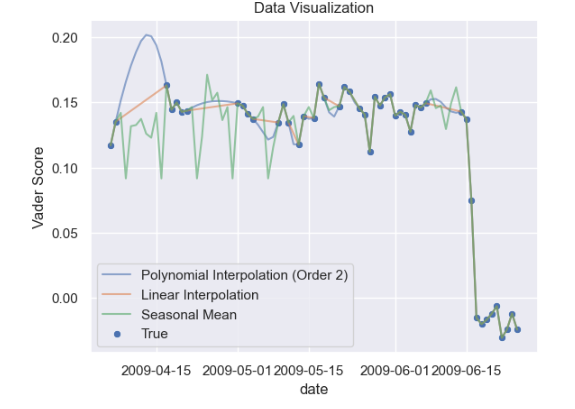
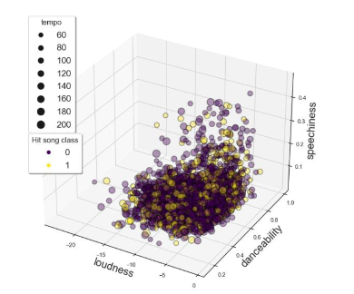
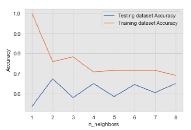
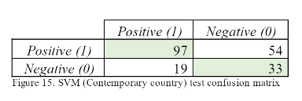

Sentiment analysis using Pyspark, MySQL and Cassandra
Big Data
In this project we explore how to extract the sentiment of more than one million tweets,
understanding the sentiment of such a vast number of tweets involves various challenges and complexities.
The rich and dynamic nature of Twitter data, characterized by abbreviations, slang, and context-specific language,
demands a robust approach to sentiment analysis. My aim is to delve into the intricate task of deciphering the emotions
expressed within this massive corpus of tweets, providing valuable insights into public opinion and trends.
In order to process such vast amount of data I'll be using Pyspark as distributed processing system which is going to be link to a Mysql Database for
storing the raw data and a Cassandra database for storing the sentiment dataset; the raw data is stored as csv file.

Pyspark will be used as main processing tool, the implementation will link to the databases using jar and database connectors which has been installed already,
this implementation strategy will allow to read and write to the two databases using pyspark, full code here: Spark-cassandra-processing

Once data has been loaded to Pyspark the following processes have been completed:
- Cleaning: removal of hashtags, tags and general text Cleaning
- Datetime formatting: checking and extracting correct date from tweets
- Sentiment analysis: using Vader and Text blob algorithms I've extracted the sentiment of every tweet and compared the two
- Aggregate the data by day in order to have the average sentiment of Tweets per day
Vader and TextBlob are tools intended for uses on different datasets in this case Vader was able to detect non neutral sentiment better than text blob


The end product of the all process was an aggregated dataset with dates and average sentiment by day, because of the missing data I had to interpolate the missing data points by using
an average seasonal mean

Classification model for predicting Popular songs
Machine learning
Welcome to a transformative musical journey where data meets melody. In this project, I harnessed the power of 5 different machine learning models
(KNN, Naive Bayes, Random Forest, Decision tree, Support vector machine) to create predictive models for music popularity. By analyzing key features and
patterns within a vast musical dataset, these models serve as a symphony of insights, forecasting the potential popularity of songs. Full code available here: Github link
The feature of the datasets are:
- Key: The key of a song refers to the tonal center or the pitch around which the music revolves. It is often identified by a note (e.g., C major, D minor).
- Mode: Mode describes the overall mood or emotional quality of a piece of music. Common modes include major (happy or bright) and minor (sad or darker).
- Time Signature: This indicates the number of beats in a measure and which note value gets the beat. For example, 4/4 time signature means there are four beats
in a measure, and a quarter note gets one beat.
- Acousticness: A measure of how acoustic or electronic a track is. A higher value suggests a more acoustic (non-electronic) sound.
- Danceability: This metric assesses how suitable a track is for dancing based on its rhythm, tempo, and other musical elements.
- Energy: Represents the intensity and activity of a song. High-energy tracks are typically fast-paced and loud.
- Instrumentalness: Indicates whether a track is instrumental or contains vocals. A higher value suggests a higher likelihood of the track being instrumental.
- Liveness: This measures the likelihood that the recording is of a live performance. Higher values suggest a live recording.
- Loudness: The overall volume of the track. It is measured in decibels (dB).
- Speechiness: Reflects the presence of spoken words in a track. A higher value indicates more spoken words or a higher proportion of speech-like sounds.
- Valence: Describes the musical positiveness of a track. Tracks with high valence sound more positive or happy, while those with low valence sound more negative or sad.
- Tempo: The speed or pace of a piece of music, usually measured in beats per minute (BPM).
- Popularity: each song has been labeled as popular or non popular based on number of listeners.
After cleanining and processing Exploratory analysis was done in order to develop an understanding of trends and patterns for different genre of music.

The modelling has been developed by splitting the data into a 80/20 ratio of train and test data and results were evaluated (example in figure for KNN).

Each model has been tested for different genres.

Finally thanks to a confusion matrix the accuracy of the model have been tested.
